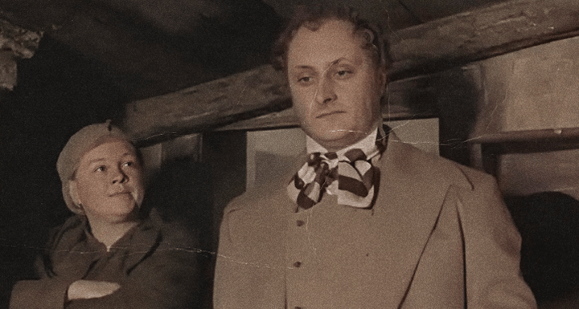
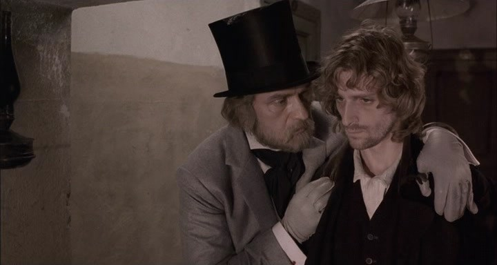

Двойники в романе
Ознакомьтесь с приёмом, который Ф.М.Достоевский использует для развенчания теории главного героя.
Двойники Родиона Раскольникова - люди одной теории. Их кровожадные и развращённые образы - опровержение ядовитой философии.
Пётр Петрович Лужин
Адвокат петербугской конторы, делец

«Негодяй Лужин – сладострастное ничтожество, стремящееся властвовать» - отзывается автор о своём герое. И в правду, Лужин, желая власти, совершает множество негативных поступков, а в частности: пытается поссорить Родиона с семьей, опорочив в их глазах Соню Мармеладову, хочет жениться на его сестре Дуне исключительно ради того, чтобы получать удовольствие от её финансовой зависимости. Главный же принцип жизни героя: «Возлюби прежде всех одного себя, ибо всё на свете на личном интересе основано» - отвергает евангельскую заповедь «Возлюби ближнего как самого себя» точно также, как это делает теория Раскольникова. Главное различие героев заключается в том, что эта идея для Родиона - выстраданная мысль, сросшаяся с его личностью, покорившая его ум, а для Лужина лишь прикрытие, скрывающее его истинное желание - достичь богатства и комфорта. Путь Петра Петровича – путь морального разложения и абсолютного эгоизма: ради своих целей он не только совершает различные преступления, но и активно лжёт самому себе, пытаясь выставить собственные деяния за полностью оправданные.
Аркадий Иванович Свидригайлов
Азартный игрок с весьма противоречивым характером

Вторым двойником главного героя является Аркадий Иванович Свидригайлов, азартный игрок с весьма противоречивым характером. Философия Свидригайлова гласит о том, что зло может быть оправдано, если оно делается ради какой-то важной цели. Он любит свободу от правил и принципов. На его совести загубленная девочка, крепостной Филипп, смерть его жены. Аркадий Иванович – ужасный человек, но всё же он не утрачивает свою человечность полноценно: он всё ещё способен творить добро. Устраивает детей Катерины Ивановны в пансионат, даёт деньги Соне Мармеладовой – всё это Свидригайлов делает по воле души. Однако Аркадий Иванович, не способный более жить под тяжестью своих грехов, совершает страшнейший грех – самоубийство. Этот персонаж показывает, что одним из возможных исходов для Раскольникова – смерть от своих же рук, о которой тот немало размышлял.